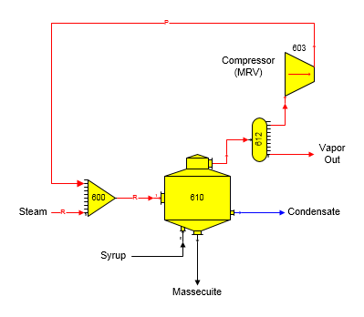
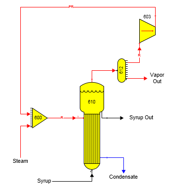

The figure below shows a mechanical vapor re-compressor (MVR) compressing pan vapors.

The output flow from the MVR is a pressure feedback flow with the pressure value set by the pressure of the steam flow into receiver station no. 600. In this case, the quantity of vapor flow to the MVR must be specified in the distributor station, or Sugars will send either all, or none, of the vapor flow from the pan to the MVR. All of the vapor flow out of the pan will go to the MVR if the MVR is connected to the lowest output port number of the distributor station. In the above diagram, only two vapor flows leave the distributor and the vapor flow that does not go to the MVR leaves the model, but the vapor flow from the distributor to the MVR is on distributor output port 1 and the flow leaving the model is on distributor output port 7; hence, all of the vapor from the pan will go out to the MVR and none of it will leave the model unless the quantity of vapor to the MVR is specified in distributor station no. 612. Thus, be sure to specify a quantity for vapor flow to a compressor station if the flow to the compressor is from a distributor station and the quantity of flow isn't required; otherwise, Sugars will not know how much vapor flow should go to the compressor.

The above figure shows an evaporator station with an MVR recompressing vapor from the evaporator. In this example, the quantity of vapor flow to the MVR is controlled by the quantity of steam demanded by the evaporator station no. 610 (see the 'R' in 'PR' on the vapor line from the MVR). Receiver station no. 600 uses recompressed vapor from the MVR to satisfy its required output flow needs (see the "R" in the flow line between station no. 600 and 610). Pressure feedback is used to set the pressure of the recompressed vapor leaving the MVR (see the "P" in "PR" on the vapor line from the MVR). Specifying a small quantity of steam into receiver station no. 600 will set the discharge pressure for vapor leaving the MVR, and specifying percent total solids for syrup flow out of the evaporator will determine the quantity of vapor flow that goes to the compressor (MVR). Any excess vapor not used by the MVR will leave the model at distributor station no. 612. The only data that needs to be entered for the compressor station no. 603 is the name of the station and the discharge temperature because pressure feedback from receiver station no. 600 sets the discharge pressure for the compressor.